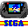

Bernie ][ The Rescue is the software that pioneered Apple IIgs emulation. Since its introduction in 1996, Bernie has been leading
Apple II emulation. Bernie is being used today by thousands of users -
from notoric gamers to businessmen who are running their business with Bernie.
License: Shareware, $15
Author/Publisher: F.E. Systems
Modification Date: January 13, 2000
Requirements: PPC, Mac OS 8, 8.1 or 8.5 - Apple IIGS Rom not included - see documentation for details
Catakig is a Macintosh application for emulating the Apple][, Apple][+, and Apple//e models of
personal computers. It is a fat application, so it will run on Macs of both CPU types, though it is
more thoroughly tested on the PowerMac platform.
This is a "virtual Coleco" - it should behave like a real ColecoVision system, complete with the
original sounds, graphics, and even flaws of the original software. Although the default settings
should work for the majority of games, additional options are listed in "Preferences" in case you
want to experiment with different settings.
License: Shareware, $35
Author/Publisher: Marat Fayzullin/Ported to the Mac by John Stiles
DGen features pretty good compatibility with Genesis software, and, for the first time on the
Macintosh in a standalone emulator, FM sound. This means that you can hear music in many games
(though not all, as the implementation doesn't appear to be perfect yet). DGen can open ROMs
compressed with Gzip without expanding them first. In addition, it can open both .SMD and .BIN
formats.
License: Freeware
Author/Publisher: Ported by John Stiles, Gil Pedersen and Richard Bannister
Generator features fairly good compatibility with Genesis software. It also supports FM sound (music in most
games), although PSG sound is not supported in this release. Generator can open ROMs compressed with Gzip
without expanding them first. In addition, it can open both .SMD and .BIN formats.
iNES features include a PowerPC assembly core, and compatibility with the NES, Vs. Unisystem and DiskSystem. Thanks
to its highly optimized core, iNES is playable at full speed on even the slowest PowerPC-based Macintosh! iNES is also
the most compatible Nintendo emulator for Macintosh, and supports almost every known Nintendo game with virtually no
glitching.
The ultimate nostalgia trip. This emulator lets you play all your favorite games of yore. Asteroids,
Spy Hunter, Star Wars, Donkey Kong, Pac Man, Galaxian etc. All in their original form. It also supports
NeoGeo ROMs.
Requirements: PPC, .53a needs Mac OS 8.6 or higher or Mac OS X, version .3x needs Quicktime 3.0 or better - 0.28 is compatible with 68k Macs
Direct Download
File Size: 3107 Kb - version 0.53a - PPC only
Direct Download
File Size: 2766 Kb - version 0.36a - PPC only
Direct Download
File Size: 1991 Kb - version 0.35 - PPC only - released July 6, 1999
Direct Download
File Size: 1002 Kb - version 0.28 - 68k version
Parent Directory
- check here for earlier versions if the latest version doesn't do it for you
Home Page

MasterGear 1.3
MasterGear is an emulator for the Sega Master System and the Sega Game Gear. In short, it allows
Sega Master System or Game Gear cartridges to be played on your Macintosh. MasterGear attempts
to provide a fully accurate replica of the original Sega Master System and Game Gear hardware
in Macintosh-compatible software.
License: Shareware, $35
Author/Publisher: Marat Fayzullin - ported to the Mac by John Stiles
A Nintendo64 emulator with some decent game play. Sound is supported to some extent but it's still more of annoyance at this point.
License: Freeware
Author/Publisher: Gerrit Gossen
Modification Date: April 6, 200`
Requirements: mac os 8.1 or later with opengl 1.1.2 or later installed. to get reasonable performance you will need a G3 or G4 with a relatively recent 3d accelerator.
SNES9X is a Super Nintendo emulator which was originally designed by Gary Henderson, Chad Kitching
and Jerremy Koot. It is now being coded by a new, anonymous team. The Macintosh version of SNES9X is ported by John Stiles.
Virtual Gameboy is a Nintendo Gameboy emulator which was designed by Marat Fayzullin.
The Macintosh version of Virtual Gameboy is ported by John Stiles.
License: Shareware, $35
Author/Publisher: Marat Fayzullin - ported to the Mac by John Stiles
Now you can play many popular PlayStation games right on your Mac with Connectix Virtual Game Station software.
One easty-to-use application - simply pop Playstaion games into your G3 computer's CD player -
no additional hardware required.